library('data.table')
library('tidyverse')
library('gridExtra') # grid.arrange 사용해주는(그림 한 화면에 그려주는, 사실 jupyter에서는 별로 쓸모 없음)
library('lmtest') # dwtest(수업) 시계열 자료분석 실습 1
불규칙, 추세성분, 주기성분의 이해
불규칙 성분
set.seed(1245)
n = 100set.seed(1245)
z <- 5000 + 20*rnorm(n)
z %>% head- 5008.38280132228
- 4970.88332789754
- 4970.88239836075
- 4979.68707256194
- 4989.33801721561
- 4986.32787849186
- 같은 방법
set.seed(1245)
rnorm(n, 5000, 20) %>% head- 5008.38280132228
- 4970.88332789754
- 4970.88239836075
- 4979.68707256194
- 4989.33801721561
- 4986.32787849186
plot(rnorm(n), type = 'l')
abline(h = 0, lty = 2)
- 20곱하면 표준편차가 +- 20정도 증가
plot(20*rnorm(n), type = 'l')
abline(h = 0, lty = 2)- 5000더하면 평균도 5000증가
plot(5000 + 20*rnorm(n), type = 'l')
abline(h = 5000, lty = 2)ts : TimeSeries로 바꿔주는 함수(시계열)
z.ts <- ts(z,
start = c(1980,1), # 1980년 1월부터 시작
frequency = 12) # 12면 월별로, 4면 분기별로, 365면 일별로
z.ts| Jan | Feb | Mar | Apr | May | Jun | Jul | Aug | Sep | Oct | Nov | Dec | |
|---|---|---|---|---|---|---|---|---|---|---|---|---|
| 1980 | 5008.383 | 4970.883 | 4970.882 | 4979.687 | 4989.338 | 4986.328 | 5006.518 | 5018.451 | 4998.983 | 5005.944 | 4988.978 | 4985.049 |
| 1981 | 5017.035 | 4999.103 | 4970.289 | 4994.124 | 4962.204 | 4986.311 | 5013.922 | 4970.494 | 4988.571 | 4978.363 | 4974.529 | 5009.565 |
| 1982 | 4976.217 | 4996.012 | 4966.755 | 5029.489 | 5018.575 | 5011.398 | 5013.209 | 5023.421 | 4997.901 | 5012.820 | 4982.245 | 5003.137 |
| 1983 | 5002.352 | 5027.803 | 5009.028 | 4978.874 | 4992.870 | 5006.686 | 4995.802 | 4985.561 | 4984.286 | 5000.353 | 5002.772 | 4989.359 |
| 1984 | 5030.011 | 4985.272 | 4999.767 | 5020.035 | 4974.976 | 5043.349 | 4966.228 | 5003.027 | 4976.126 | 5030.512 | 4983.901 | 5016.143 |
| 1985 | 4966.177 | 5044.241 | 4999.514 | 4995.445 | 4992.818 | 4985.386 | 5009.778 | 4980.818 | 4979.339 | 4983.166 | 5010.162 | 5000.873 |
| 1986 | 4979.712 | 4973.113 | 4994.088 | 5004.415 | 5024.681 | 5001.001 | 5019.175 | 4964.417 | 4994.112 | 4971.170 | 5021.870 | 5015.610 |
| 1987 | 4996.487 | 4984.219 | 4967.279 | 5008.634 | 5032.191 | 4992.309 | 5005.209 | 4999.648 | 5025.737 | 4996.766 | 4985.408 | 4994.681 |
| 1988 | 5013.342 | 5027.108 | 5012.320 | 5010.116 |
z.ts %>% cycle # 주기알려줌| Jan | Feb | Mar | Apr | May | Jun | Jul | Aug | Sep | Oct | Nov | Dec | |
|---|---|---|---|---|---|---|---|---|---|---|---|---|
| 1980 | 1 | 2 | 3 | 4 | 5 | 6 | 7 | 8 | 9 | 10 | 11 | 12 |
| 1981 | 1 | 2 | 3 | 4 | 5 | 6 | 7 | 8 | 9 | 10 | 11 | 12 |
| 1982 | 1 | 2 | 3 | 4 | 5 | 6 | 7 | 8 | 9 | 10 | 11 | 12 |
| 1983 | 1 | 2 | 3 | 4 | 5 | 6 | 7 | 8 | 9 | 10 | 11 | 12 |
| 1984 | 1 | 2 | 3 | 4 | 5 | 6 | 7 | 8 | 9 | 10 | 11 | 12 |
| 1985 | 1 | 2 | 3 | 4 | 5 | 6 | 7 | 8 | 9 | 10 | 11 | 12 |
| 1986 | 1 | 2 | 3 | 4 | 5 | 6 | 7 | 8 | 9 | 10 | 11 | 12 |
| 1987 | 1 | 2 | 3 | 4 | 5 | 6 | 7 | 8 | 9 | 10 | 11 | 12 |
| 1988 | 1 | 2 | 3 | 4 |
z.ts %>% time| Jan | Feb | Mar | Apr | May | Jun | Jul | Aug | Sep | Oct | Nov | Dec | |
|---|---|---|---|---|---|---|---|---|---|---|---|---|
| 1980 | 1980.000 | 1980.083 | 1980.167 | 1980.250 | 1980.333 | 1980.417 | 1980.500 | 1980.583 | 1980.667 | 1980.750 | 1980.833 | 1980.917 |
| 1981 | 1981.000 | 1981.083 | 1981.167 | 1981.250 | 1981.333 | 1981.417 | 1981.500 | 1981.583 | 1981.667 | 1981.750 | 1981.833 | 1981.917 |
| 1982 | 1982.000 | 1982.083 | 1982.167 | 1982.250 | 1982.333 | 1982.417 | 1982.500 | 1982.583 | 1982.667 | 1982.750 | 1982.833 | 1982.917 |
| 1983 | 1983.000 | 1983.083 | 1983.167 | 1983.250 | 1983.333 | 1983.417 | 1983.500 | 1983.583 | 1983.667 | 1983.750 | 1983.833 | 1983.917 |
| 1984 | 1984.000 | 1984.083 | 1984.167 | 1984.250 | 1984.333 | 1984.417 | 1984.500 | 1984.583 | 1984.667 | 1984.750 | 1984.833 | 1984.917 |
| 1985 | 1985.000 | 1985.083 | 1985.167 | 1985.250 | 1985.333 | 1985.417 | 1985.500 | 1985.583 | 1985.667 | 1985.750 | 1985.833 | 1985.917 |
| 1986 | 1986.000 | 1986.083 | 1986.167 | 1986.250 | 1986.333 | 1986.417 | 1986.500 | 1986.583 | 1986.667 | 1986.750 | 1986.833 | 1986.917 |
| 1987 | 1987.000 | 1987.083 | 1987.167 | 1987.250 | 1987.333 | 1987.417 | 1987.500 | 1987.583 | 1987.667 | 1987.750 | 1987.833 | 1987.917 |
| 1988 | 1988.000 | 1988.083 | 1988.167 | 1988.250 |
z.ts %>% frequency
12
z.ts %>% start- 1980
- 1
z.ts %>% end- 1988
- 4
z.ts %>% tsp # 시작, 끝, 주기 알려줌- 1980
- 1988.25
- 12
- ts장점 : 기본적으로 linetype = l로 해줌, 부가 옵션들이 더 나옴
ts.plot(z.ts, xlab = "date", ylab = "zt",
main ="irregular elements")
abline(h = 5000)- 예제)
a_ <- "1980/1/1"
a_ %>% class
as.Date(a_) %>% class
'character'
'Date'
- 보이기에 비슷해 보이는데 명확하게 분류되는게 작동면에서 유리
tmp.data <- data.table(Time = seq.Date(as.Date("1980/1/1"),
by = "month",
length.out = 100),
z = z)
tmp.data %>% head| Time | z |
|---|---|
| <date> | <dbl> |
| 1980-01-01 | 5008.383 |
| 1980-02-01 | 4970.883 |
| 1980-03-01 | 4970.882 |
| 1980-04-01 | 4979.687 |
| 1980-05-01 | 4989.338 |
| 1980-06-01 | 4986.328 |
ggplot(tmp.data, aes(Time, z)) +
geom_line(col = 'steelblue') +
geom_hline(yintercept = 5000, col = 'grey80', lty = 2) + # 선 긋기
ggtitle("irregular elements") +
scale_x_date(date_breaks = "year", date_labels = "%Y") + # 연 단위로 보이게 만들기
theme_bw() +
theme(text = element_text(size = 16), # 글씨 크기 조절 옵션
axis.title = element_blank()) # x, y label 제거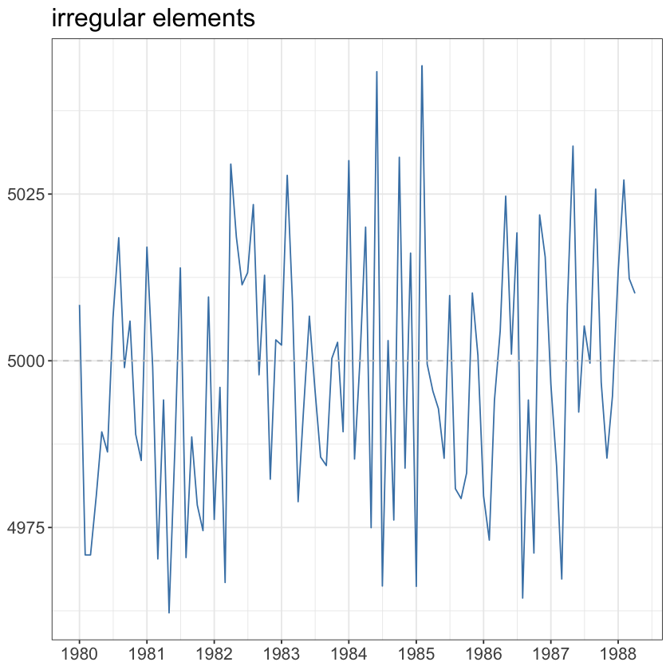
추세성분
- 하는 방법 : 일단 추세를 하나 그리고 노이즈를 더해준다.
set.seed(1234)
n = 100
t <- 1:n
x <- 0.5*t # 추세
z <- 0.5*t + rnorm(n) # 추세 + 오차plot(x, type = 'l')- 기본 추세 + 노이즈
plot(z, type = 'l')- 노이즈 추가, 연도, 주기, 변경
z.ts <- ts(z, start = c(1980, 1), frequency = 12)
x.ts <- ts(x, start = c(1980, 1), frequency = 12)- 추세선 + (추세 + 노이즈)선
ts.plot(z.ts, x.ts)- 추세선, 추세 + 오차선 색 다르게해서 그리기
ts.plot(z.ts, x.ts,
col = c('blue', 'red'),
lty = 1:2,
xlab = "date",
ylab = "zt",
main = "trend component")
legend("topleft", # 범례 추가
legend = c("series", "trend"),
lty = 1:2,
col = c("blue", "red"))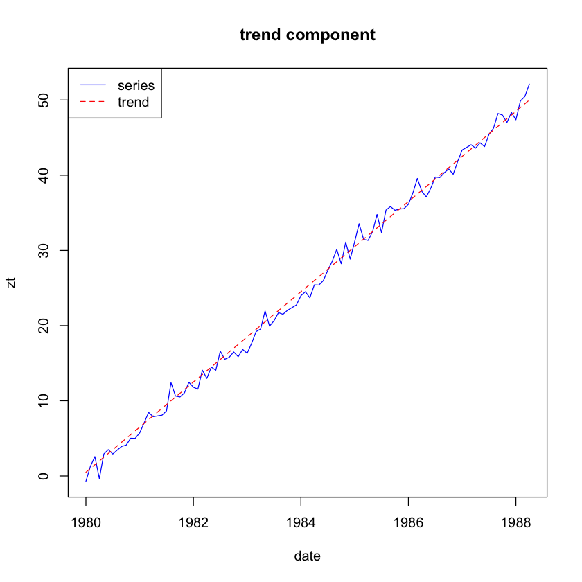
계절성분
n = 120 # 계절성분 120개
t <- 1:n
a <- rnorm(n,0,1) # 오차plot(a, type = 'l')- 앞에 0.8곱해주면 분산을 줄여줌(오차를 줄이니까)
10더한 것은 평균 10증가 -> 불규칙성분만들기
plot(10 + 0.8*a, type = 'l')- 주기가 있는 사인함수
plot(sin((2*pi*t)/12),type = 'l')- z는 위의 sin함수에 노이즈가 더해진 형태
z <- 10 + 3*sin((2*pi*t)/12) + 0.8*a- sin함수에 오차가 섞여서 계절성을 띄는 성분이 됨.
z.ts <- ts(z,
start = c(1985, 1),
frequency = 12)
plot(z.ts,
xlab = "date",
ylab = "zt",
main = "seasonal component")주기성분을 갖는 시계열
삼각함수
x <- seq(0, 48, 0.01)
s <- 12
par(mfrow = c(4, 1))plot(x, sin(2*pi*x/s), type = 'l', col = 'steelblue', lwd = 2,
xlab = "", ylab = "", main = paste0('sin::', "frequncy=", s))
abline(h = 0, lty = 2)
abline(v = seq(0, 48, by = s), lty = 2)
plot(x, cos(2*pi*x/s), type = 'l', col = 'steelblue', lwd = 2,
xlab = "", ylab = "", main = paste0('cos::', "frequncy=", s))
abline(h = 0, lty = 2)
abline(v = seq(0, 48, by = s), lty = 2)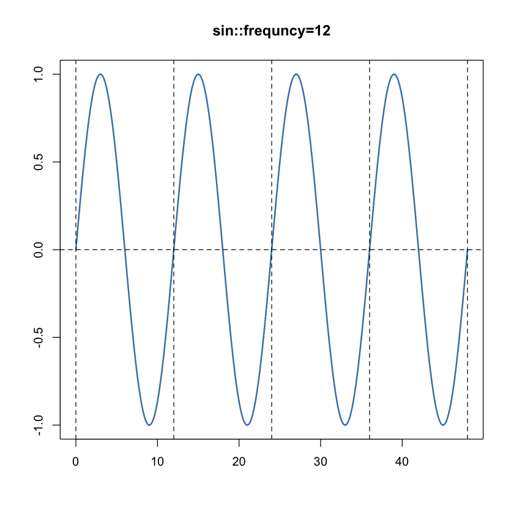
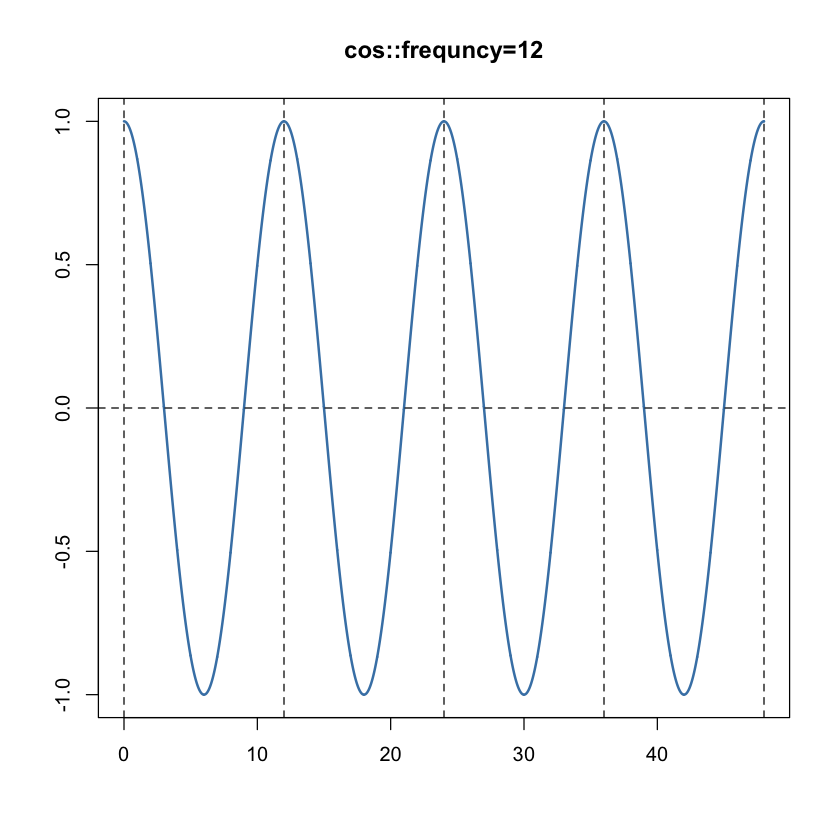
- sin, cos 두 함수 더한 함수
아래는 각각 weight를 다르게 해 반영한 함수
plot(x, sin(2*pi*x/s) + cos(2*pi*x/s), type = 'l', col = 'steelblue', lwd = 2,
xlab = "", ylab = "", main = paste0('sin+cos::', "frequncy=", s))
abline(h = 0, lty = 2)
abline(v = seq(0, 48, by = s), lty = 2)
abline(v = seq(1.5, 48, by = s), lty = 2)
plot(x, 1.5*sin(2*pi*x/s) + 0.7*cos(2*pi*x/s), type = 'l', col = 'steelblue', lwd = 2,
xlab = "", ylab = "", main = paste0('sin+cos::', "frequncy=", s))
abline(h = 0, lty = 2)
abline(v = seq(0, 24, by = s), lty = 2)
abline(v = seq(1.5, 24, by = s), lty = 2)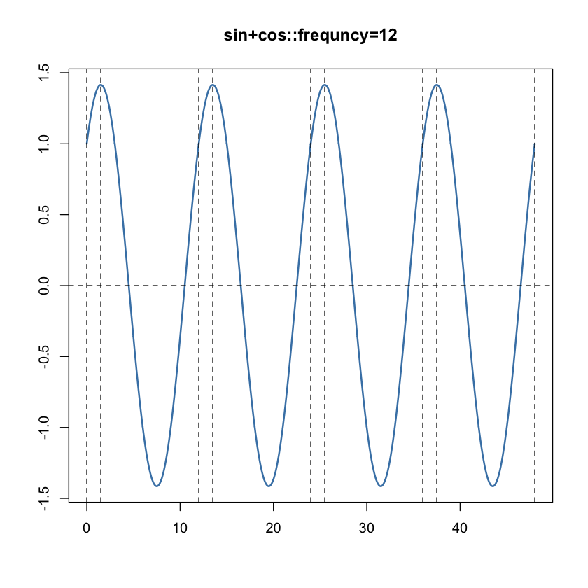
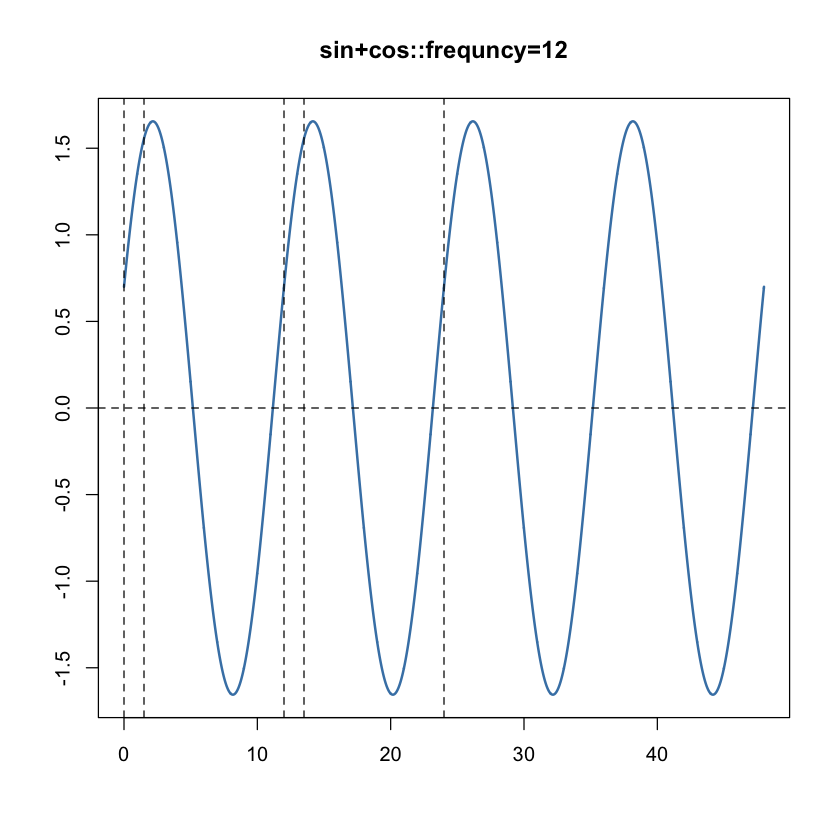
주기를 바꿔가면서
par(mfrow = c(4, 1))s <- 12
plot(x, sin(2*pi*x/s), type = 'l', col = 'steelblue', lwd = 2,
xlab = "", ylab = "", main = paste0('sin::', "frequncy=", s))
abline(h = 0, lty = 2)
abline(v = seq(0, 48, by = s), lty = 2)
s <- 6
plot(x, sin(2*pi*x/s), type = 'l', col = 'steelblue', lwd = 2,
xlab = "", ylab = "", main = paste0('sin::', "frequncy=", s))
abline(h = 0, lty = 2)
abline(v = seq(0, 48, by = s), lty = 2)
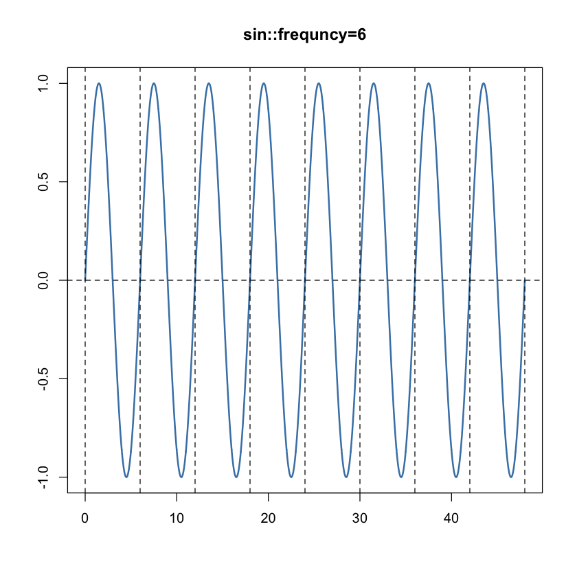
- 주기는 6그대로인데 weight를 다르게하면
또 다른 다양한 형태가 나온다.
plot(x, sin(2*pi*x/12) + sin(2*pi*x/6), type = 'l', col = 'steelblue', lwd = 2,
xlab = "", ylab = "", main = paste0('sin::', "frequncy=", s))
abline(h = 0, lty = 2)
abline(v = seq(0, 48, by = s), lty = 2)
plot(x, 2*sin(2*pi*x/12) + 0.8*sin(2*pi*x/6), type = 'l', col = 'steelblue', lwd = 2,
xlab = "", ylab = "", main = paste0('sin::', "frequncy=", s))
abline(h = 0, lty = 2)
abline(v = seq(0, 48, by = s), lty = 2) 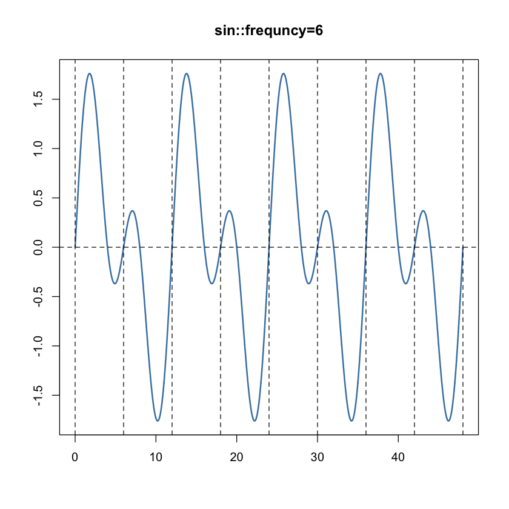
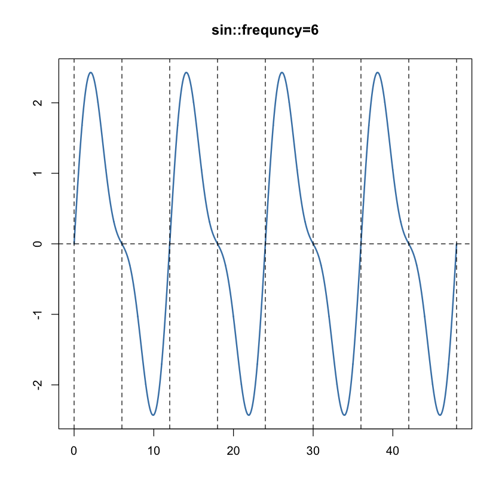
주기 3개 만들고 3개 더해서 그리기
s <- 12
plot(x, sin(2*pi*x/s), type = 'l', col = 'steelblue', lwd = 2,
xlab = "", ylab = "", main = paste0('sin::', "frequncy=", s))
abline(h = 0, lty = 2)
abline(v = seq(0, 24, by = s), lty = 2)
s <- 6
plot(x, sin(2*pi*x/s), type = 'l', col = 'steelblue', lwd = 2,
xlab = "", ylab = "", main = paste0('sin::', "frequncy=", s))
abline(h = 0, lty = 2)
abline(v = seq(0, 24, by = s), lty = 2)
s <- 3
plot(x, sin(2*pi*x/s), type = 'l', col = 'steelblue', lwd = 2,
xlab = "", ylab = "", main = paste0('sin::', "frequncy=", s))
abline(h = 0, lty = 2)
abline(v = seq(0, 24, by = s), lty = 2)
plot(x, sin(2*pi*x/12) + sin(2*pi*x/6) + sin(2*pi*x/3), type = 'l', col = 'steelblue', lwd = 2,
xlab = "", ylab = "", main = paste0('sin + sin + sin::', "frequncy=", 12))
abline(h = 0, lty = 2)
abline(v = seq(0, 24, by = s), lty = 2)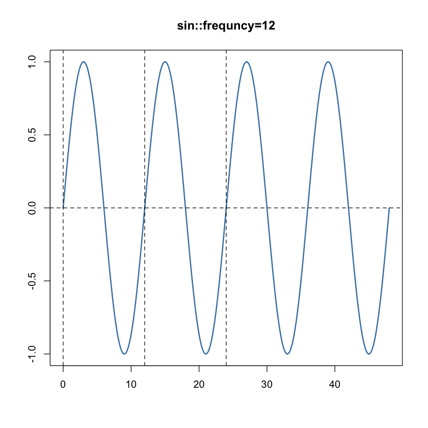
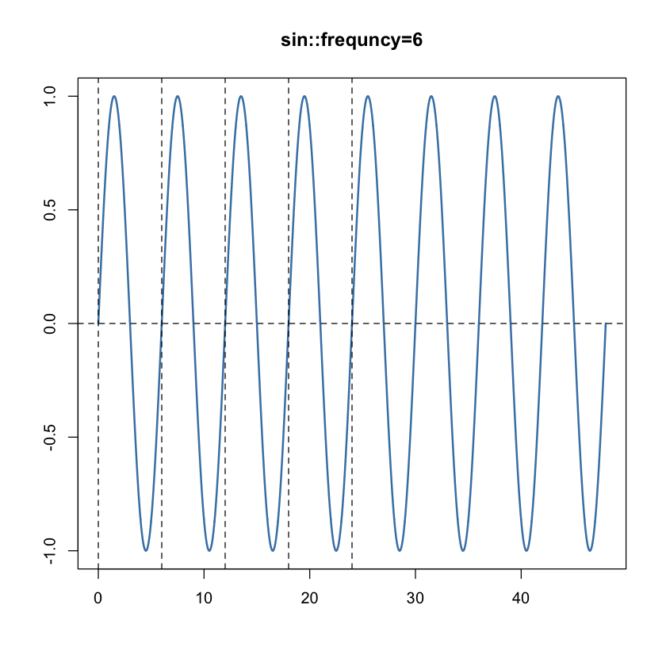
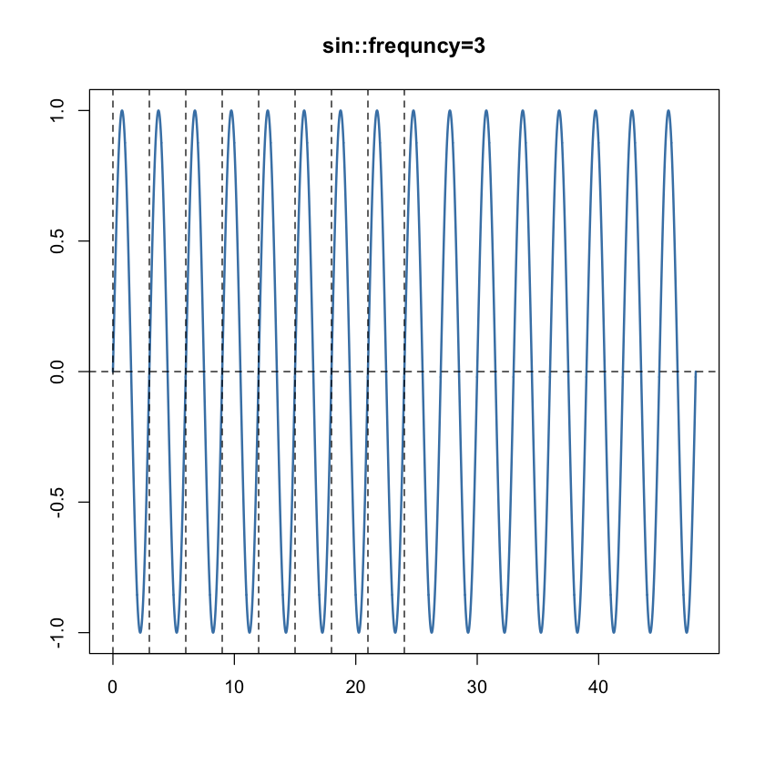
- 여러개 섞으면서 그리기
마지막 거는 추세까지 섞임
plot(x, sin(2*pi*x/12) + sin(2*pi*x/6) + sin(2*pi*x/3), type = 'l', col = 'steelblue', lwd = 2,
xlab = "", ylab = "", main = paste0('sin + sin + sin::', "frequncy=", 12))
abline(h = 0, lty = 2)
abline(v = seq(0, 24, by = 12), lty = 2)
y <- sin(2*pi*x/12) + sin(2*pi*x/6) + sin(2*pi*x/3) + cos(2*pi*x/12) + cos(2*pi*x/6) + cos(2*pi*x/3)
plot(x, y, type = 'l', col = 'steelblue', lwd = 2,
xlab = "", ylab = "", main = "s+s+s+c+c+c : frequncy=, 12")
abline(h = 0, lty = 2)
abline(v = seq(0, 24, by = 12), lty = 2)
y2 <- x*0.5 + sin(2*pi*x/12) + sin(2*pi*x/6) +sin(2*pi*x/3) + cos(2*pi*x/12) + cos(2*pi*x/6) + cos(2*pi*x/3)
plot(x, y2, type = 'l', col = 'steelblue', lwd = 2,
xlab = "", ylab = "", main = "s+s+s+c+c+c frequency=12")
abline(a = 0, b = 0.5, lty = 2)
abline(v = seq(0, 24, by = 12), lty = 2)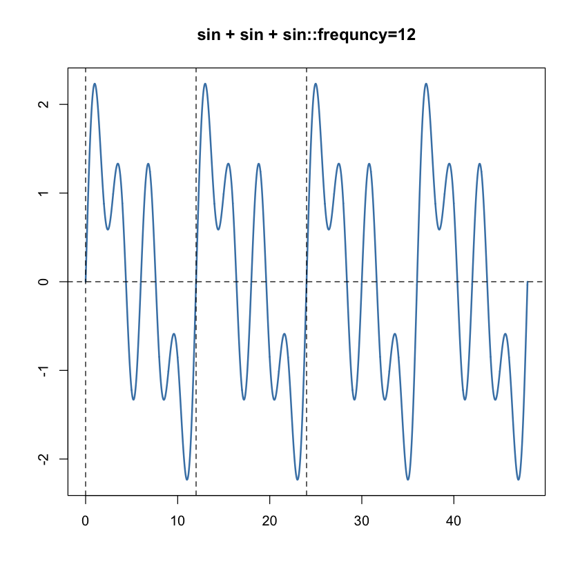
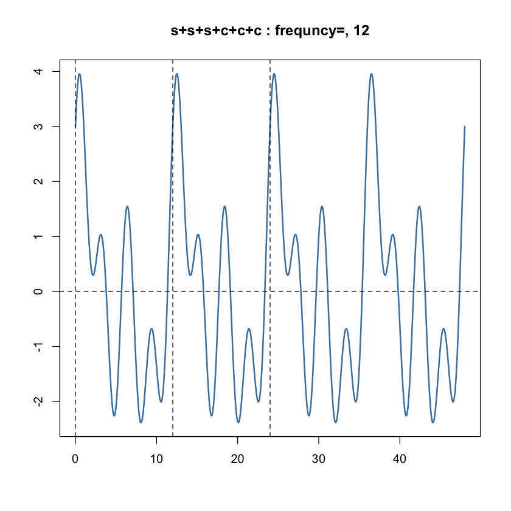
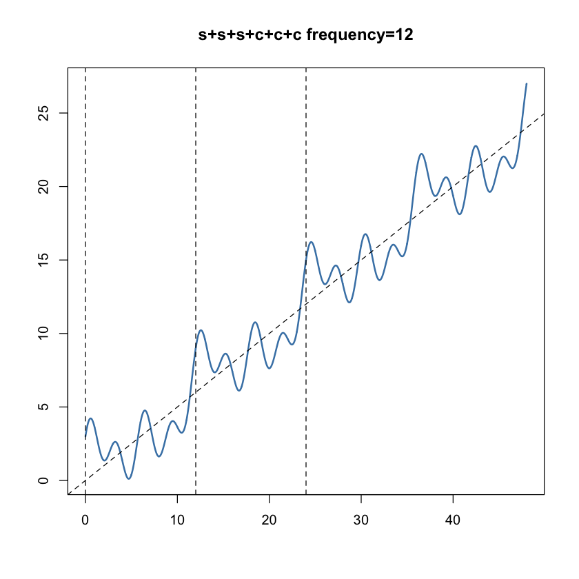
n <- 100
t <- 1:n
a1 <- -0.8 # 진폭
a2 <- 1.4 # 진폭
phi1 <- pi/3
phi2 <- 3*pi/4
first <- a1*sin(pi*t/6 + phi1) # 첫 번째 주기성분(주기 6)
second <- a2*sin(pi*t/3 + phi2) # 두 번째 주기성분(주기 3)dt <- data.table(t = t,
first = first, # 첫 번째 주기 성분
second = second,# 두 번째 주기 성분
z = first + second)# 그 두 개 더한 성분
p1 <- ggplot(dt, aes(t, first)) + geom_line(col = 'skyblue', size = 1) +
geom_point(col = 'steelblue', size = 1) +
ylim(-2.5, 2) + xlab("") +
scale_x_continuous(breaks = seq(1, 100, by = 12)) +
theme_bw()
p2 <- ggplot(dt, aes(t, second)) + geom_line(col = 'skyblue', size = 1) +
geom_point(col = 'steelblue', size = 1) +
ylim(-2.5, 2) + xlab("") +
scale_x_continuous(breaks = seq(1, 100, by = 12)) +
theme_bw()
p3 <- ggplot(dt, aes(t, z)) + geom_line(col = 'skyblue', size = 1) +
geom_point(col = 'steelblue', size = 1) +
ylim(-2.5, 2) + xlab("") +
scale_x_continuous(breaks = seq(1, 100, by = 12)) +
theme_bw()p1
p2
p3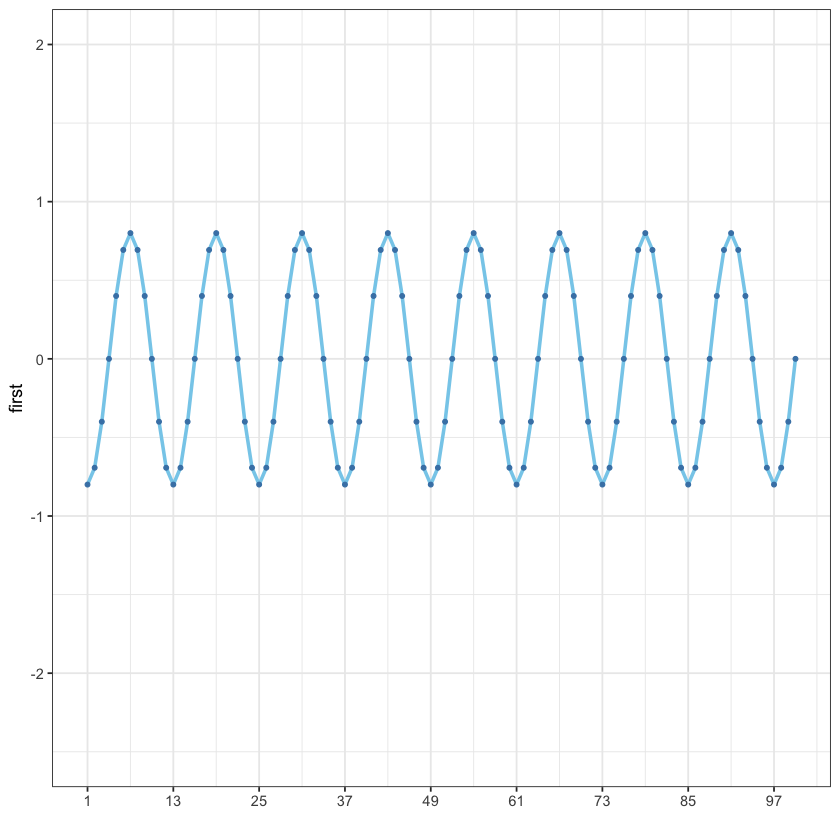
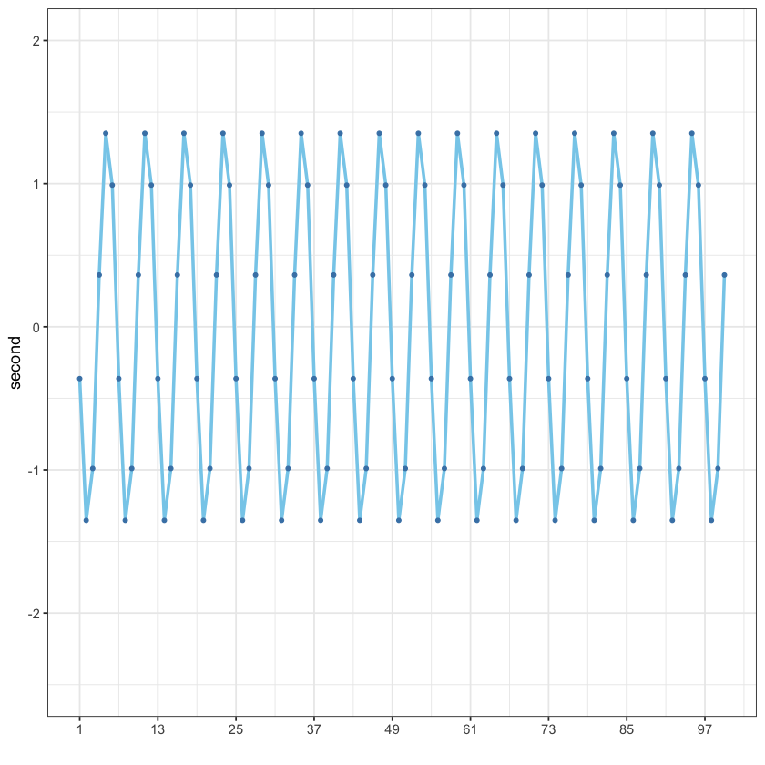
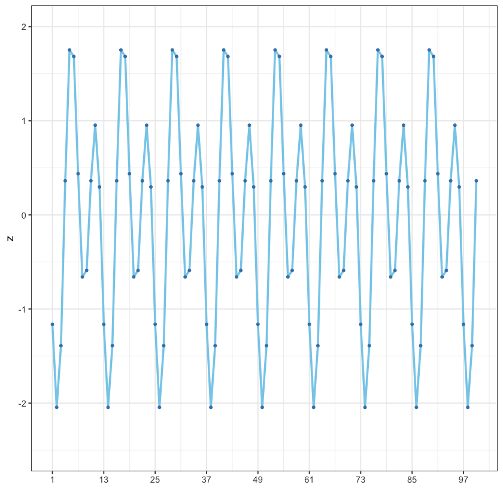
grid.arrange(p1, p2, p3, nrow = 3)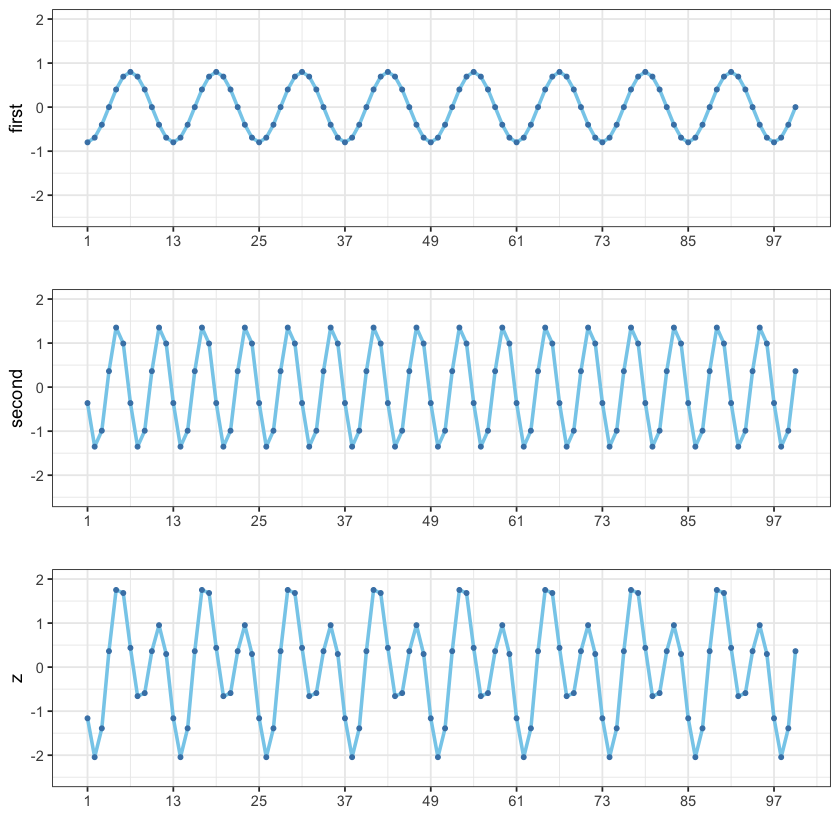
실제 데이터 활용
백화점 매출액 - 지시함수
z <- scan("depart.txt")
dep <- ts(z, frequency = 12, start = c(1984, 1)) # TimeSeries로 바꿔도되고 안해도 되는데 여기서는 함
plot(dep)- 매출액이 증가하는 추세가 보임
계졀성도 있어보임(특히 1년주기)
또 점점 분산이 증가하는 이분산성을 보이는데 따라서 로그 변환을 해준다.
tmp.data <- data.table(
day = seq.Date(as.Date("1984-01-01"),
by = 'month', length.out = length(z)),
z = z
)
tmp.data[, lndep := log(z)] # 로그변환
tmp.data[, y := as.factor(as.integer(cycle(dep)))] # factor씌우는 게 그냥 넣으면 그대로 안 받아들여져서
tmp.data[, trend := 1:length(z)]
tmp.data %>% head| day | z | lndep | y | trend |
|---|---|---|---|---|
| <date> | <dbl> | <dbl> | <fct> | <int> |
| 1984-01-01 | 423 | 6.047372 | 1 | 1 |
| 1984-02-01 | 458 | 6.126869 | 2 | 2 |
| 1984-03-01 | 607 | 6.408529 | 3 | 3 |
| 1984-04-01 | 564 | 6.335054 | 4 | 4 |
| 1984-05-01 | 536 | 6.284134 | 5 | 5 |
| 1984-06-01 | 536 | 6.284134 | 6 | 6 |
p1 <- ggplot(tmp.data, aes(day, z)) +
geom_line(col = 'skyblue') +
geom_point(col = 'steelblue') +
scale_x_date(date_breaks = "1 year", date_labels = "%Y-%m") +
labs(title = "monthly department store sales TimeSeries plot") +
theme_bw() +
theme(axis.title = element_blank())
p2 <- ggplot(tmp.data, aes(day, lndep)) +
geom_line(col = 'skyblue') +
geom_point(col = 'steelblue') +
scale_x_date(date_breaks = "1 year", date_labels = "%Y-%m") +
labs(title = "monthly department store sales TimeSeries plot after log transformation") +
theme_bw() +
theme(axis.title = element_blank())- 로그 변환 이후 분산 폭이 줄어듦을 볼 수 있다.
p1
p2 # 로그변환한 거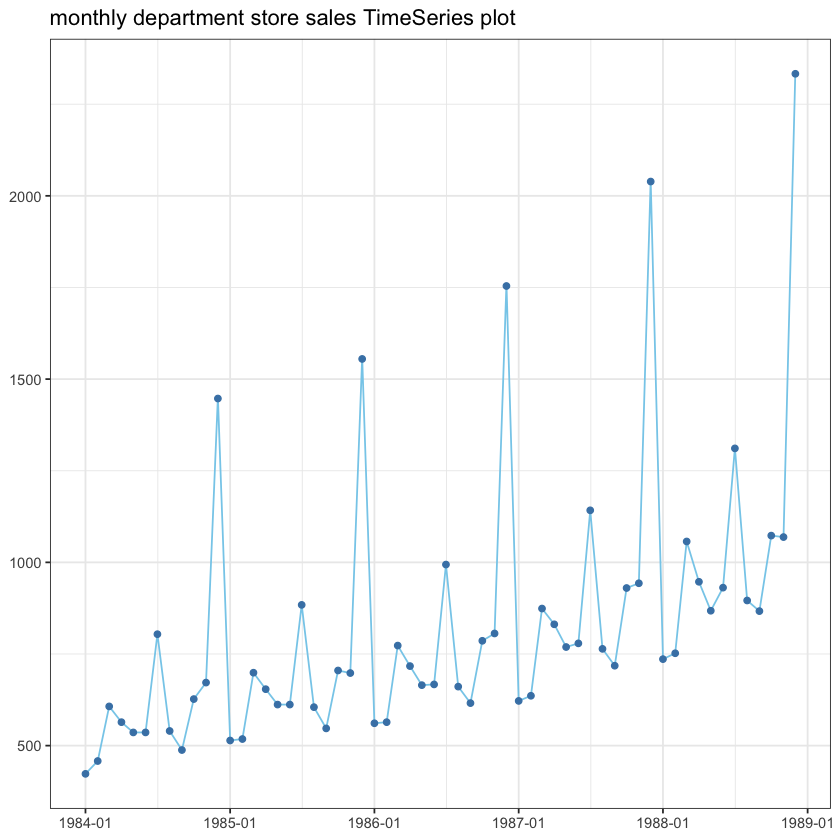
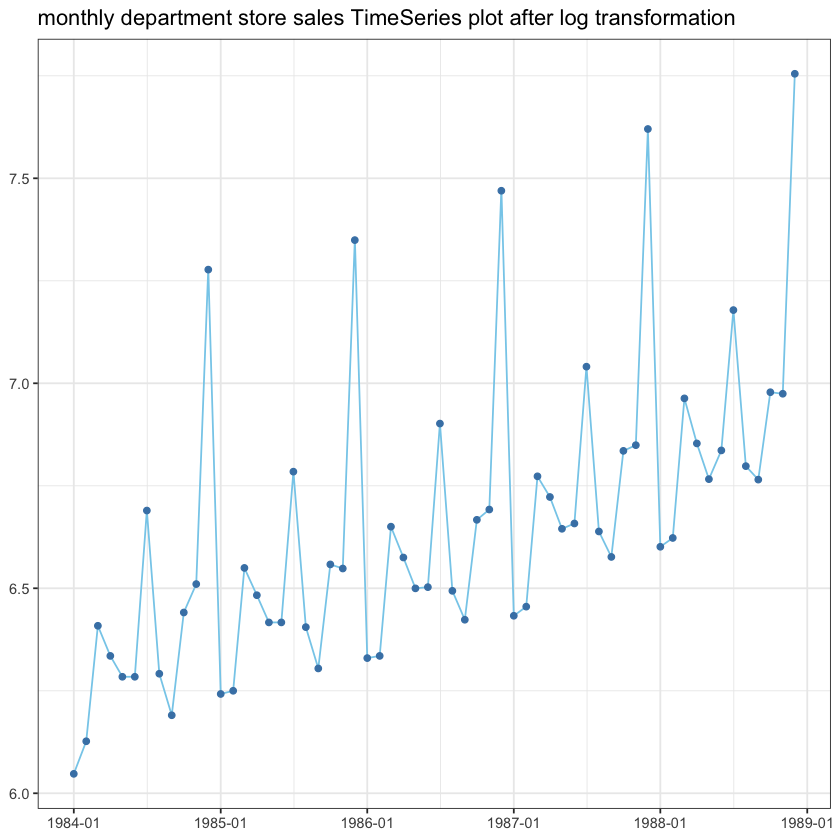
grid.arrange(p1, p2, nrow = 2)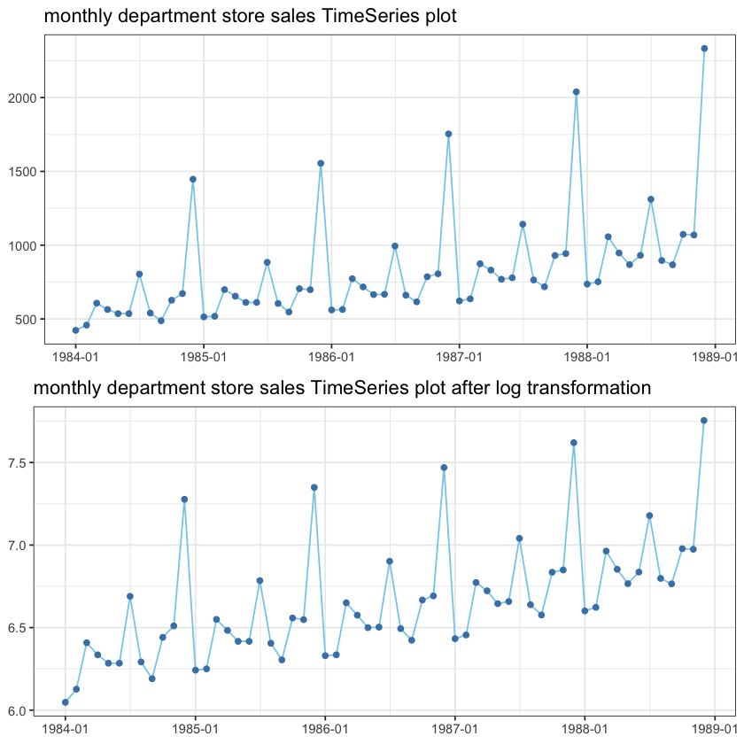
모형적합(선형회귀)
- 지시함수(Indicater)를 사용하고 싶다면, \(\beta_0\) = 0 or \(\sum \beta_i\) = 0 or \(\beta_1\) = 0 셋 중 하나를 가정해야함.
아래는 \(\beta_0\) = 0 가정
tmp.data %>% head| day | z | lndep | y | trend |
|---|---|---|---|---|
| <date> | <dbl> | <dbl> | <fct> | <int> |
| 1984-01-01 | 423 | 6.047372 | 1 | 1 |
| 1984-02-01 | 458 | 6.126869 | 2 | 2 |
| 1984-03-01 | 607 | 6.408529 | 3 | 3 |
| 1984-04-01 | 564 | 6.335054 | 4 | 4 |
| 1984-05-01 | 536 | 6.284134 | 5 | 5 |
| 1984-06-01 | 536 | 6.284134 | 6 | 6 |
reg <- lm(lndep ~ 0 + trend + y, data = tmp.data)
summary(reg)
Call:
lm(formula = lndep ~ 0 + trend + y, data = tmp.data)
Residuals:
Min 1Q Median 3Q Max
-0.038679 -0.018689 -0.001468 0.015185 0.057288
Coefficients:
Estimate Std. Error t value Pr(>|t|)
trend 0.0106603 0.0001925 55.39 <2e-16 ***
y1 6.0641904 0.0122952 493.21 <2e-16 ***
y2 6.0807995 0.0123718 491.50 <2e-16 ***
y3 6.3811183 0.0124509 512.50 <2e-16 ***
y4 6.2953455 0.0125325 502.32 <2e-16 ***
y5 6.2132392 0.0126164 492.47 <2e-16 ***
y6 6.2197771 0.0127027 489.64 <2e-16 ***
y7 6.5885065 0.0127914 515.08 <2e-16 ***
y8 6.1842831 0.0128823 480.06 <2e-16 ***
y9 6.1001148 0.0129754 470.13 <2e-16 ***
y10 6.3334505 0.0130707 484.56 <2e-16 ***
y11 6.3417116 0.0131681 481.60 <2e-16 ***
y12 7.1104816 0.0132676 535.93 <2e-16 ***
---
Signif. codes: 0 ‘***’ 0.001 ‘**’ 0.01 ‘*’ 0.05 ‘.’ 0.1 ‘ ’ 1
Residual standard error: 0.0253 on 47 degrees of freedom
Multiple R-squared: 1, Adjusted R-squared: 1
F-statistic: 3.199e+05 on 13 and 47 DF, p-value: < 2.2e-16- 해석 : coefficients에서 trend 보면 매월 0.0106603씩 증가함을 볼 수 있음.
로그 취한 것이기에 6.0641904, 6.0807995등은 각각 로그매출액의 1월의 평균, 2월의 평균을 의미(쭉쭉 12월까지)
미국은 블랙 프라이데이등으로 인해 12월 매출이 높은 것을 볼 수 있음, 또 높은 구간은 여름(7월)이고 이는 그래프에서도 나타남.
- \(\beta_1\) = 0 가정
위 처럼 0 안넣으면 자동으로 “\(\beta_1\) = 0 가정” 들어간다.
reg2 <- lm(lndep ~ trend + y, data = tmp.data)
summary(reg2)
contrasts(tmp.data$y)
Call:
lm(formula = lndep ~ trend + y, data = tmp.data)
Residuals:
Min 1Q Median 3Q Max
-0.038679 -0.018689 -0.001468 0.015185 0.057288
Coefficients:
Estimate Std. Error t value Pr(>|t|)
(Intercept) 6.0641904 0.0122952 493.215 < 2e-16 ***
trend 0.0106603 0.0001925 55.388 < 2e-16 ***
y2 0.0166091 0.0160024 1.038 0.3046
y3 0.3169279 0.0160059 19.801 < 2e-16 ***
y4 0.2311551 0.0160117 14.437 < 2e-16 ***
y5 0.1490488 0.0160198 9.304 3.12e-12 ***
y6 0.1555867 0.0160302 9.706 8.32e-13 ***
y7 0.5243161 0.0160429 32.682 < 2e-16 ***
y8 0.1200927 0.0160579 7.479 1.54e-09 ***
y9 0.0359244 0.0160752 2.235 0.0302 *
y10 0.2692601 0.0160948 16.730 < 2e-16 ***
y11 0.2775212 0.0161166 17.220 < 2e-16 ***
y12 1.0462912 0.0161407 64.823 < 2e-16 ***
---
Signif. codes: 0 ‘***’ 0.001 ‘**’ 0.01 ‘*’ 0.05 ‘.’ 0.1 ‘ ’ 1
Residual standard error: 0.0253 on 47 degrees of freedom
Multiple R-squared: 0.9959, Adjusted R-squared: 0.9948
F-statistic: 949.2 on 12 and 47 DF, p-value: < 2.2e-16| 2 | 3 | 4 | 5 | 6 | 7 | 8 | 9 | 10 | 11 | 12 | |
|---|---|---|---|---|---|---|---|---|---|---|---|
| 1 | 0 | 0 | 0 | 0 | 0 | 0 | 0 | 0 | 0 | 0 | 0 |
| 2 | 1 | 0 | 0 | 0 | 0 | 0 | 0 | 0 | 0 | 0 | 0 |
| 3 | 0 | 1 | 0 | 0 | 0 | 0 | 0 | 0 | 0 | 0 | 0 |
| 4 | 0 | 0 | 1 | 0 | 0 | 0 | 0 | 0 | 0 | 0 | 0 |
| 5 | 0 | 0 | 0 | 1 | 0 | 0 | 0 | 0 | 0 | 0 | 0 |
| 6 | 0 | 0 | 0 | 0 | 1 | 0 | 0 | 0 | 0 | 0 | 0 |
| 7 | 0 | 0 | 0 | 0 | 0 | 1 | 0 | 0 | 0 | 0 | 0 |
| 8 | 0 | 0 | 0 | 0 | 0 | 0 | 1 | 0 | 0 | 0 | 0 |
| 9 | 0 | 0 | 0 | 0 | 0 | 0 | 0 | 1 | 0 | 0 | 0 |
| 10 | 0 | 0 | 0 | 0 | 0 | 0 | 0 | 0 | 1 | 0 | 0 |
| 11 | 0 | 0 | 0 | 0 | 0 | 0 | 0 | 0 | 0 | 1 | 0 |
| 12 | 0 | 0 | 0 | 0 | 0 | 0 | 0 | 0 | 0 | 0 | 1 |
- 해석 : 따라서 coefficients 보면 y1없는데 \(\beta_1\) = 0이라 여기 안 나온거임, 그래서 여기서는 Intercept값이 y1(1월)값임(즉, Intercept값이 \(\beta_0\)값).
해석하면 1월이 기준점이 되는거기에 y2는 2월과 1월의 차이를 의미, y3는 3월과 1월의 차이
y2 맨 뒤 보면 별표3개 안 붙어 있는데 이거는 밑에 신뢰성 유의하지 않다는 의미(0.001만큼), 이유가 1월과 2월의 차이는 별로 의미없다는 것이라서
contrasts를 보면 1월이 다 0인 것을 볼 수 있는데, 이를 보아 1월이 기준점임을 알 수 있음.
- \(\sum \beta_i\) = 0 가정
reg3 <- lm(lndep ~ trend + y, data = tmp.data, contrasts = list(y = "contr.sum"))
summary(reg3)
Call:
lm(formula = lndep ~ trend + y, data = tmp.data, contrasts = list(y = "contr.sum"))
Residuals:
Min 1Q Median 3Q Max
-0.038679 -0.018689 -0.001468 0.015185 0.057288
Coefficients:
Estimate Std. Error t value Pr(>|t|)
(Intercept) 6.3260849 0.0067177 941.703 < 2e-16 ***
trend 0.0106603 0.0001925 55.388 < 2e-16 ***
y1 -0.2618944 0.0108845 -24.061 < 2e-16 ***
y2 -0.2452853 0.0108675 -22.571 < 2e-16 ***
y3 0.0550335 0.0108538 5.070 6.63e-06 ***
y4 -0.0307393 0.0108436 -2.835 0.00674 **
y5 -0.1128456 0.0108368 -10.413 8.53e-14 ***
y6 -0.1063078 0.0108334 -9.813 5.87e-13 ***
y7 0.2624217 0.0108334 24.223 < 2e-16 ***
y8 -0.1418018 0.0108368 -13.085 < 2e-16 ***
y9 -0.2259700 0.0108436 -20.839 < 2e-16 ***
y10 0.0073656 0.0108538 0.679 0.50071
y11 0.0156268 0.0108675 1.438 0.15708
---
Signif. codes: 0 ‘***’ 0.001 ‘**’ 0.01 ‘*’ 0.05 ‘.’ 0.1 ‘ ’ 1
Residual standard error: 0.0253 on 47 degrees of freedom
Multiple R-squared: 0.9959, Adjusted R-squared: 0.9948
F-statistic: 949.2 on 12 and 47 DF, p-value: < 2.2e-16- 해석 : 이번에는 y12가 빠졌는데, 위에서 \(\sum \beta_i\) = 0라고 했는데 이는 자연스레 \(\beta_1 + \beta_2 + \beta_3 ... + \beta_{12}\) = 0임을 의미한다.
다시 말하면, \(\beta_{12} = -(\beta_1 + \beta_2 + \beta_3 ... \beta_{11})\)라는 말이 된다.
Intercept(6.3260849) 전체 평균을 의미(월별 상관없이)
즉, 1월은 전체 평균(6.3260849) 대비 -0.2618944한 거 만큼 의미
12월은 안나왔는데 12월은 위의 식처럼 평균대비 1~11을 다 빼면 나온다.
즉 ,0.7843966 + 6.3260849 = 7.1104815 -> 12월 거
- coef 1~11 더한 거
c(-0.2618944,-0.2452853,0.0550335,-0.0307393,-0.1128456,-0.1063078, 0.2624217,-0.1418018 ,-0.2259700,0.0073656,0.0156268) %>% sum
-0.7843966
tmp.data[, fitted_lndep := fitted(reg)]ggplot(tmp.data, aes(day, lndep)) +
geom_line(col = 'skyblue', lwd = 1) +
geom_line(aes(day, fitted_lndep), col = 'orange', lwd = 1) +
scale_x_date(date_breaks = "1 year", date_labels = "%Y-%m") +
labs(title = "department sales after log transformation vs estimated value") +
theme_bw() +
theme(axis.title = element_blank())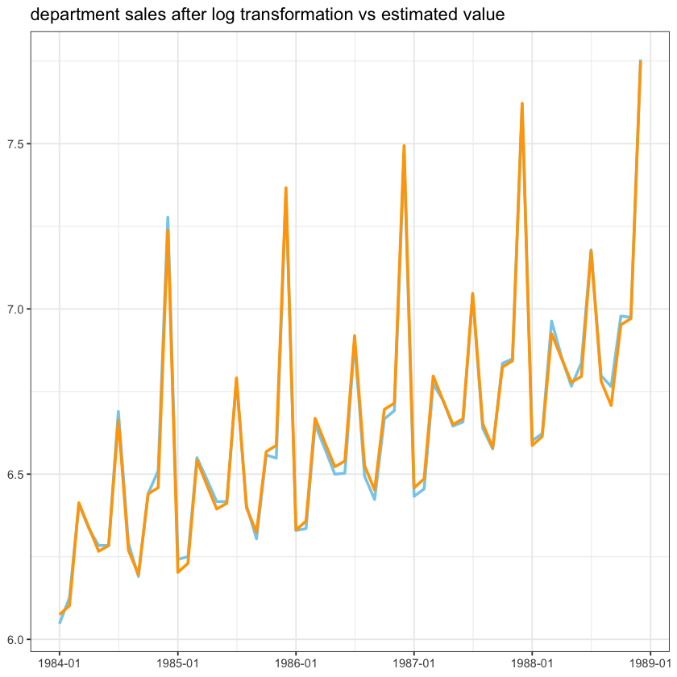
- 파랑색이 원래, 노랑색이 적합된 값 의미
잔차그림
tmp.data[, res := resid(reg)]ggplot(tmp.data, aes(day, res)) +
geom_line(col = 'skyblue') +
geom_point(col = 'steelblue') +
scale_x_date(date_breaks = "1 year", date_labels = "%Y-%m") +
geom_hline(yintercept = 0, col = 'grey', lty = 2) +
labs(title = "Time series plot of residuals") +
theme_bw() +
theme(axis.title = element_blank())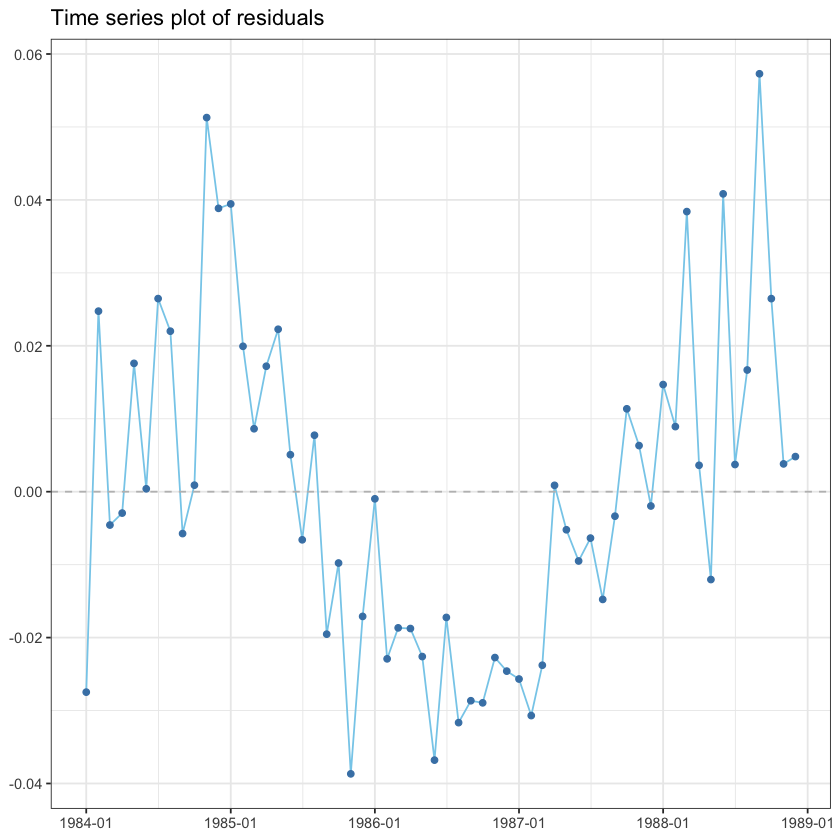
- 그림보면 양의 상관관계가 있어보임.
그래서 D.W test해보면
dwtest(reg, alternative = 'two.sided')
Durbin-Watson test
data: reg
DW = 0.82642, p-value = 4.781e-06
alternative hypothesis: true autocorrelation is not 0- 결과 독립성 확보 실패, 정확하게 1차 자기 상관관계가 있다. 특히 1차 양의 자기상관관계
백화점 매출액 - 삼각함수
tmp.data_sub <- tmp.data[,.(lndep, trend)]
tmp.data_sub %>% head| lndep | trend |
|---|---|
| <dbl> | <int> |
| 6.047372 | 1 |
| 6.126869 | 2 |
| 6.408529 | 3 |
| 6.335054 | 4 |
| 6.284134 | 5 |
| 6.284134 | 6 |
- 데이터 생성
- 아래 12, 6, 4 .. 은 주기 의미
tmp.data_sub <- cbind(tmp.data_sub,
tmp.data_sub[, lapply(as.list(1:5),
function(i) sin(2*pi*i/12*trend))])
names(tmp.data_sub)[-(1:2)] <- paste("sin", c(12, 6, 4, 3, 2.4), sep = "_")
tmp.data_sub <- cbind(tmp.data_sub,
tmp.data_sub[, lapply(as.list(1:5),
function(i) cos(2*pi*i/12*trend))])
names(tmp.data_sub)[-(1:7)] <- paste("cos", c(12, 6, 4, 3, 2.4), sep = "_")
tmp.data_sub %>% head | lndep | trend | sin_12 | sin_6 | sin_4 | sin_3 | sin_2.4 | cos_12 | cos_6 | cos_4 | cos_3 | cos_2.4 |
|---|---|---|---|---|---|---|---|---|---|---|---|
| <dbl> | <int> | <dbl> | <dbl> | <dbl> | <dbl> | <dbl> | <dbl> | <dbl> | <dbl> | <dbl> | <dbl> |
| 6.047372 | 1 | 5.000000e-01 | 8.660254e-01 | 1.000000e+00 | 8.660254e-01 | 5.000000e-01 | 8.660254e-01 | 0.5 | 6.123234e-17 | -0.5 | -8.660254e-01 |
| 6.126869 | 2 | 8.660254e-01 | 8.660254e-01 | 1.224647e-16 | -8.660254e-01 | -8.660254e-01 | 5.000000e-01 | -0.5 | -1.000000e+00 | -0.5 | 5.000000e-01 |
| 6.408529 | 3 | 1.000000e+00 | 1.224647e-16 | -1.000000e+00 | -2.449294e-16 | 1.000000e+00 | 6.123234e-17 | -1.0 | -1.836970e-16 | 1.0 | 3.061617e-16 |
| 6.335054 | 4 | 8.660254e-01 | -8.660254e-01 | -2.449294e-16 | 8.660254e-01 | -8.660254e-01 | -5.000000e-01 | -0.5 | 1.000000e+00 | -0.5 | -5.000000e-01 |
| 6.284134 | 5 | 5.000000e-01 | -8.660254e-01 | 1.000000e+00 | -8.660254e-01 | 5.000000e-01 | -8.660254e-01 | 0.5 | 3.061617e-16 | -0.5 | 8.660254e-01 |
| 6.284134 | 6 | 1.224647e-16 | -2.449294e-16 | 3.673940e-16 | -4.898587e-16 | 6.123234e-16 | -1.000000e+00 | 1.0 | -1.000000e+00 | 1.0 | -1.000000e+00 |
모형적합
reg_2 <- lm(lndep ~., data = tmp.data_sub)
summary(reg_2)
Call:
lm(formula = lndep ~ ., data = tmp.data_sub)
Residuals:
Min 1Q Median 3Q Max
-0.08232 -0.04855 0.00972 0.04645 0.08527
Coefficients:
Estimate Std. Error t value Pr(>|t|)
(Intercept) 6.3237250 0.0148062 427.100 < 2e-16 ***
trend 0.0107376 0.0004242 25.315 < 2e-16 ***
sin_12 -0.0277129 0.0103066 -2.689 0.009829 **
sin_6 -0.0382551 0.0102107 -3.747 0.000481 ***
sin_4 -0.1555546 0.0101931 -15.261 < 2e-16 ***
sin_3 0.0666506 0.0101872 6.543 3.70e-08 ***
sin_2.4 0.0128922 0.0101849 1.266 0.211691
cos_12 0.0857900 0.0101931 8.416 5.21e-11 ***
cos_6 0.1675743 0.0101931 16.440 < 2e-16 ***
cos_4 0.1592698 0.0101931 15.625 < 2e-16 ***
cos_3 0.1267107 0.0101931 12.431 < 2e-16 ***
cos_2.4 0.2000603 0.0101931 19.627 < 2e-16 ***
---
Signif. codes: 0 ‘***’ 0.001 ‘**’ 0.01 ‘*’ 0.05 ‘.’ 0.1 ‘ ’ 1
Residual standard error: 0.05578 on 48 degrees of freedom
Multiple R-squared: 0.9796, Adjusted R-squared: 0.9749
F-statistic: 209.5 on 11 and 48 DF, p-value: < 2.2e-16- 해석 : sin_2.4 하나 유의하지 않다고 나옴(별표)
원래 sin, cos함수는 1부터 -1까지 갖는데 Estimate 나온 숫자만큼 진폭을 줄여주거나 늘려줌.
tmp.data_sub[, day := tmp.data$day]
tmp.data_sub[, fitted_lndep := fitted(reg_2)]ggplot(tmp.data_sub, aes(day, lndep)) +
geom_line(col = 'skyblue', lwd = 1) +
geom_line(aes(day, fitted_lndep), col = 'orange', lwd = 1) +
scale_x_date(date_breaks = "1 year", date_labels = "%Y-%m") +
theme_bw() +
theme(axis.title = element_blank())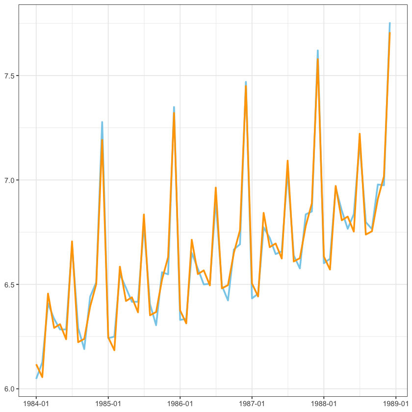
잔차분석
tmp.data_sub[, res := resid(reg_2)]
ggplot(tmp.data_sub, aes(day, res)) +
geom_line(col = 'skyblue') +
geom_point(col = 'steelblue') +
scale_x_date(date_breaks = "1 year", date_labels = "%Y-%m") +
theme_bw() +
theme(axis.title = element_blank())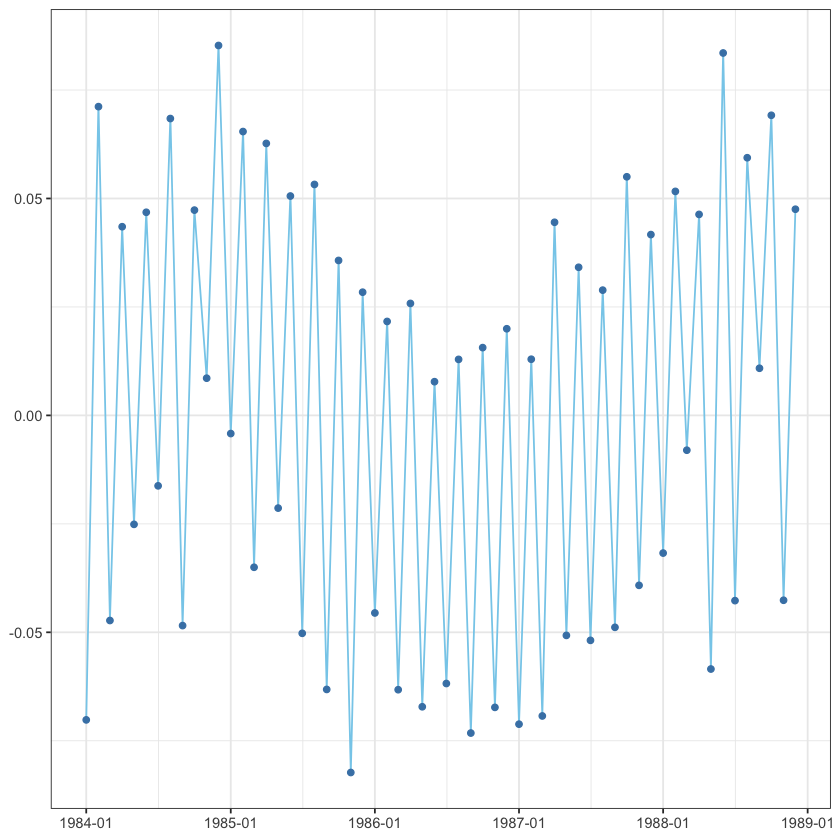
- 해석 : 1차 음의 자기상관관계가 있다.
다른 것보다 등분산성의 문제가 있어보인다.(그저 보기에) = 독립성문제
DW test
dwtest(reg_2)
dwtest(reg_2, alternative = "two.side")
dwtest(reg_2, alternative = "less")
Durbin-Watson test
data: reg_2
DW = 3.2703, p-value = 1
alternative hypothesis: true autocorrelation is greater than 0
Durbin-Watson test
data: reg_2
DW = 3.2703, p-value = 1.269e-06
alternative hypothesis: true autocorrelation is not 0
Durbin-Watson test
data: reg_2
DW = 3.2703, p-value = 6.346e-07
alternative hypothesis: true autocorrelation is less than 0- alternative 안 쓰면 default는 greater다
첫 번째 4에가까운 값이 나오면 two.side, less 둘 다 해보는게 좋음.
two.side 결과보면 0이 아니다. -> 기각
less 결과보면 ’음의 상관관계가 있다’의 결과 p-value가 매우 작아 기각할 수 있다.